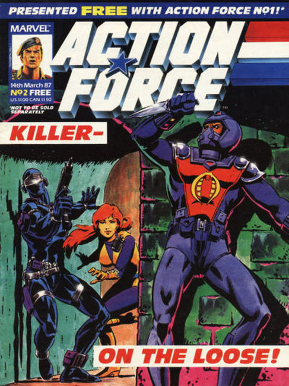
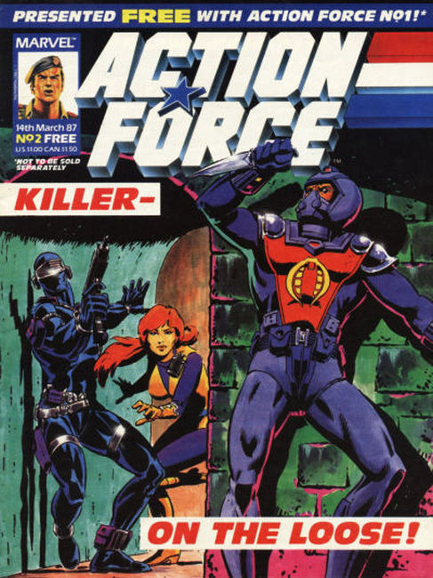

About: Action Force was a brand of European action figures released in the 1980s that was based on the Action Man toyline used to introduce G.I. Joe toys to European markets. Several publishing companies have produced comic books based on the toys.
Palitoy's series Battle Action Force was very successful, but the company was closed in 1986 after the death of its founder Alfred Pallett, with Hasbro acquiring the various intellectual property rights and sold the Battle Action Force magazine to Eagle Comics.
Following the demise of the Battle Action Force strips, a weekly Action Force comic was launched by Marvel UK on 8 March 1987, consisting of reprints of the US G.I. Joe comic book and new UK-exclusive short strips.
The G.I. Joe comics were adjusted to fit into the UK strip's continuity and had all references to G.I. Joe replaced with Action Force, and the UK-exclusive strips maintained a separate continuity from the US G.I. Joe comic. The Action Force comic was canceled in 1988 after fifty issues due to low sales and was replaced with Action Force Monthly, which was itself canceled after fifteen issues.
The Action Force Monthly title printed new stories as well as reprinting stories from the weekly title. The magazine was released in the US under the title G.I. Joe – European Missions.
In late 1989, the G.I. Joe story reprints were continued in the UK Transformers comic under the name G.I. Joe the Action Force to conform to the toy line. The reprints changed back to G.I. Joe until they were dropped in 1991. In 1995, Panini Comics obtained the Marvel UK license and began publishing an Action Man comic the following year without reference to Action Force or G.I. Joe.